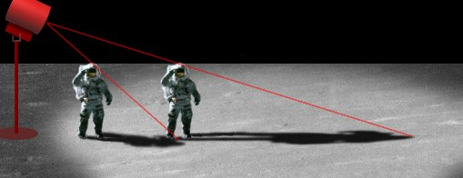
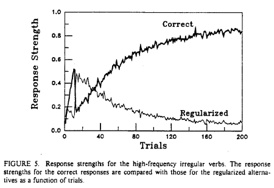
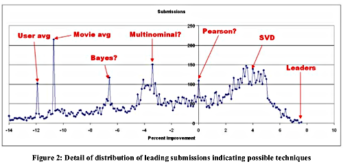

The Norvig - Chomsky debate
Table of Contents
- Science vs. pseudoscience (the demarcation problem)
- What is an explanation?
- The debate
- Science: modeling or insight?
- Case in point? "i before e except after c"
- Are statistical models ok?
- A statistical model for an aspect of language acquisition
- What if k-nearest neighbor was a scientific theory about irises?
- Pandora vs. Netflix
- Some difficult cases
- The edge of understanding
Science vs. pseudoscience (the demarcation problem)
According to Paul Thagard, a theory or discipline is pseudoscientific if it satisfies two criteria. One of these is that the theory fails to progress, and the other that "the community of practitioners makes little attempt to develop the theory towards solutions of the problems, shows no concern for attempts to evaluate the theory in relation to others, and is selective in considering confirmations and disconfirmations" (Thagard 1978, 228). — Stanford Encyclopedia of Philosophy
Again, from the Stanford Encyclopedia of Philosophy, another list of criteria for applying the label "pseudoscience" are,
- Belief in authority: It is contended that some person or persons have a special ability to determine what is true or false. Others have to accept their judgments.
- Nonrepeatable experiments: Reliance is put on experiments that cannot be repeated by others with the same outcome.
- Handpicked examples: Handpicked examples are used although they are not representative of the general category that the investigation refers to.
- Unwillingness to test: A theory is not tested although it is possible to test it.
- Disregard of refuting information: Observations or experiments that conflict with a theory are neglected.
- Built-in subterfuge: The testing of a theory is so arranged that the theory can only be confirmed, never disconfirmed, by the outcome.
- Explanations are abandoned without replacement. Tenable explanations are given up without being replaced, so that the new theory leaves much more unexplained than the previous one. (Hansson 1983)
| astrology | astronomy |
| creationism | evolution |
| homeopathy | modern medicine |
| Holocaust denialism | history |
What is an explanation?
Knowing what makes an explanation is important to knowing what makes a pursuit scientific. Generally, science seeks explanations, and explanations give understanding.
The deductive-nomological model of explanation has been highly influential (from Hempel and Oppenheim, 1948). It says that an explanation requires a pairing of a law with the facts of a case, which together imply what needs to be explained.
For example, an explanation of "why is Maisy sneezing?" could be "any person with an allergy to grass and exposure to grass will sneeze; plus, Maisy has an allergy to grass and was exposed to grass." The thing to be explained can be deduced from the explanation.
The problem with this model is it seems not every explanation has to imply the thing to be explained. For example, I might explain the fact I have a broken arm with a story about a car accident. However, I do not mention any "laws" and furthermore there is no natural law that says car accidents cause broken arms.
In another example, a law may be present and deduction may work but the "explanation" may not at all be explanatory. Consider the shadow from a flag pole. The shadow is caused by the position of the sun and the height of the pole. There relation can be described mathematically, so that the shadow's length is the result of a function applied to the sun's position and the pole height. The shadow would be explained (in a deductive-nomological sense). However, we could use algebra to rewrite the equation so that the height of the pole depends on the length of the shadow. We still have a deductive-nomological "explanation" but it makes no sense to say that the length of the shadow explains the height of the pole. The shadow is an effect, an outcome, of the height of the pole, so the shadow cannot explain the height.

Was the moon landing a hoax? From Clavius.org
Most useful explanations describe or hint at a causal story. This is why the flag pole's height explains the shadow but not vice versa. Likewise, a car accident explains a broken arm, and allergies explain sneezing. Furthermore, most "good" explanations give us an understanding of what happened and why.
There are lots of theories about what constitutes an explanation, what exactly is causation, and whether "understanding" is necessary for something to be explanatory. However, for the purposes of this discussion, we'll just work with our intuition about what an explanation is, what makes something explanatory, what it is like to understand an explanation.
The debate
Recently, Peter Norvig took the time to write a response to a comment Noam Chomsky made at a conference (not a comment made to Norvig, but to an entire research community of which Norvig considers himself a part). (Chomsky has a new reply to Norvig.) Chomsky said at the conference,
It's true there's been a lot of work on trying to apply statistical models to various linguistic problems. I think there have been some successes, but a lot of failures. There is a notion of success… which I think is novel in the history of science. It interprets success as approximating unanalyzed data.
In Chomsky's recent interview in which he replies to Norvig, he makes a similar point (emphasis added):
I thought [early attempts at AI] was first of all way too optimistic, it was assuming you could achieve things that required real understanding of systems that were barely understood, and *you just can't get to that understanding by throwing a complicated machine at it*. If you try to do that you are led to a conception of success, which is self-reinforcing, because you do get success in terms of this conception, but it's very different from what's done in the sciences. So for example, take an extreme case, suppose that somebody says he wants to eliminate the physics department and do it the right way. The "right" way is to take endless numbers of videotapes of what's happening outside the video, and feed them into the biggest and fastest computer, gigabytes of data, and do complex statistical analysis — you know, Bayesian this and that — and you'll get some kind of prediction about what's gonna happen outside the window next. In fact, you get a much better prediction than the physics department will ever give. Well, if success is defined as getting a fair approximation to a mass of chaotic unanalyzed data, then it's way better to do it this way than to do it the way the physicists do, you know, no thought experiments about frictionless planes and so on and so forth. But you won't get the kind of understanding that the sciences have always been aimed at — what you'll get at is an approximation to what's happening.
[…]
A very different approach, which I think is the right approach, is to try to see if you can understand what the fundamental principles are that deal with the core properties, and recognize that in the actual usage, there's going to be a thousand other variables intervening — kind of like what's happening outside the window, and you'll sort of tack those on later on if you want better approximations, that's a different approach. These are just two different concepts of science. The second one is what science has been since Galileo, that's modern science. The approximating unanalyzed data kind is sort of a new approach, not totally, there's things like it in the past. It's basically a new approach that has been accelerated by the existence of massive memories, very rapid processing, which enables you to do things like this that you couldn't have done by hand. But I think, myself, that it is leading subjects like computational cognitive science into a direction of maybe some practical applicability…
Interviewer: "… in engineering?"
Chomsky: … But away from understanding.
Norvig has been successful building AI systems that use statistical learning and statistical inferencing. He takes issue with Chomsky's claim that, essentially, what modern AI research is doing is not science.
Chomsky is (in)famous for hypothesizing and arguing that all humans have a tacit but unlearned knowledge of linguistic structure, a universal grammar. He believes the evidence for this hypothesis is that children cannot possibly learn all that they do about their first language just from what they hear. Rather, the structure of language is so deep and sophisticated that children must already have the mental structures needed, and do not learn these structures from experience. An important structure, for example, is the ability to understand recursive utterances, such as:
My homework assignment, which is worth 100 points in my CSE 3521 class, which is not required for my major but I wanted to take it anyway, which has turned out to be quite interesting as it happens, is due Thursday.
Although that sentence is a bit contrived, we can understand it (spoken or written). There are limits to how much recursive structure we can keep in our short-term memory, but there is clearly (or not?) a logic to it. How does a child learn this logic?
Another phenomenon that Chomsky points out is that adverbs, pronouns, and the like do not always modify or connect to the nearest candidate word, in a linear sense. Rather, they are related to the structurally closest word, which may not be closest in an utterance. He hypothesizes that the understanding of language in the brain does not take the same form as language as written or spoken (the structures in the brain are not linear, he believes).
Take a simple sentence like "Instinctively, eagles that fly swim", well, "instinctively" goes with swim, it doesn't go with fly, even though it doesn't make sense. And that's reflexive. "Instinctively", the adverb, isn't looking for the nearest verb, it's looking for the structurally most prominent one. That's a much harder computation. But that's the only computation which is ever used. Linear order is a very easy computation, but it's never used.
However, linear order is a surface-level phenomenon that, supposedly, is among the phenomenon that statistical approaches will utilize. A statistical approach may get good results, usually, by exploiting the linear order of an utterance but, Chomsky argues, the linear order and the statistics provide no understanding about the sentence. The linear order is just a side-effect, a shadow of the true structure.
Norvig's estimation of Chomsky's points, and Norvig's replies, are as follows:
- Chomsky's point: Statistical methods have had engineering success,
but that is irrelevant to science.
- Norvig's reply: He agrees, but engineering success often facilitates scientific success.
- Chomsky's point: Accurate modeling of language (e.g. statistical
models) is just building descriptions, not explanations.
- Norvig's reply: Science is both description and explanation; you can't have one without the other; in the history of science, the laborious accumulation of data is the usual mode of operation.
- Chomsky's point: Language is generated from internal structures,
and understood by transforming what's heard or read into these
structures; language is not generated or understood in the same form
as it comes out (in linear form). The way language is spoken or
written is just a peripheral after-effect, not the
essence.
- Norvig's reply: People who work in language interpretation (presumably, in the AI field) see it as a statistical inference; people actually generate and understand language in some rich statistical sense (maybe with statistical models several layers deep, like the modern AI models of speech recognition).
- Chomsky's point: Statistical models are incapable of learning all
the richness of natural language.
- Norvig's reply: Certain advances in statistical learning methods provide reason to believe that such learning methods will be able to do the job.

Figure 1: "Building Blocks," Kumi Yamashita, 1997; H230, W400, D5cm; wood, single light source, shadow
Science: modeling or insight?
Norvig argues that when Chomsky says "[Just accurately modeling the world is] a notion of [scientific] success that's very novel. I don't know of anything like it in the history of science," he is wrong. Norvig scanned issues of Science, Cell, and looked at the 2010 Nobel Prizes in science. He then writes,
My conclusion is that 100% of these articles and awards are more about "accurately modeling the world" than they are about "providing insight," although they all have some theoretical insight component as well.
Case in point? "i before e except after c"
Norvig illustrates that rules about language do not always capture the right phenomena.
P(IE) = 0.0177 P(CIE) = 0.0014 P(*IE) = 0.163 P(EI) = 0.0046 P(CEI) = 0.0005 P(*EI) = 0.0041
This model comes from statistics on a corpus of a trillion words of English text. The notation P(IE) is the probability that a word sampled from this corpus contains the consecutive letters "IE." P(CIE) is the probability that a word contains the consecutive letters "CIE", and P(*IE) is the probability of any letter other than C followed by IE. The statistical data confirms that IE is in fact more common than EI, and that the dominance of IE lessens when following a C, but contrary to the rule, CIE is still more common than CEI. Examples of "CIE" words include "science," "society," "ancient" and "species." The disadvantage of the "I before E except after C" model is that it is not very accurate.
Are statistical models ok?
Norvig: Every probabilistic model is a superset of a deterministic model (because the deterministic model could be seen as a probabilistic model where the probabilities are restricted to be 0 or 1), so any valid criticism of probabilistic models would have to be because they are too expressive, not because they are not expressive enough.
I feel that this is a bit disingenuous. Probabilistic models rarely express complex, deep relationships among data because such relationships are hard to discover via a hands-off training process. On the other hand, rule-based systems often have quite complex and deep rules (because, apparently, sometimes such rules are necessary), which are made possible by the fact that a human is creating them.
Norvig: And yes, it seems clear that an adult speaker of English does know billions of language facts (for example, that one says "big game" rather than "large game" when talking about an important football game). These facts must somehow be encoded in the brain.
Fair enough. There does seem to be a statistical bias in language generation, like the feeling of a word just rolling off the tongue, before you have thought about it. That effect is probably what produces "big game" rather than "large game."
Norvig: For example, the verb quake is listed as intransitive in dictionaries, meaning that (1) below is grammatical, and (2) is not, according to a categorical theory of grammar.
- The earth quaked.
- ? It quaked her bowels.
But (2) actually appears as a sentence of English. This poses a dilemma for the categorical theory.
Norvig also says that interpretation is different than generation:
Norvig: From the beginning, Chomsky has focused on the generative side of language. From this side, it is reasonable to tell a non-probabilistic story: I know definitively the idea I want to express—I'm starting from a single semantic form—thus all I have to do is choose the words to say it; why can't that be a deterministic, categorical process? If Chomsky had focused on the other side, interpretation, as Claude Shannon did, he may have changed his tune. In interpretation (such as speech recognition) the listener receives a noisy, ambiguous signal and needs to decide which of many possible intended messages is most likely. Thus, it is obvious that this is inherently a probabilistic problem[…]
But why the distinction?
Norvig: We also now know that language is like that as well: languages are complex, random, contingent biological processes that are subject to the whims of evolution and cultural change. What constitutes a language is not an eternal ideal form, represented by the settings of a small number of parameters, but rather is the contingent outcome of complex processes. Since they are contingent, it seems they can only be analyzed with probabilistic models. Since people have to continually understand the uncertain, ambiguous, noisy speech of others, it seems they must be using something like probabilistic reasoning. Chomsky for some reason wants to avoid this, and therefore he must declare the actual facts of language use out of bounds and declare that true linguistics only exists in the mathematical realm, where he can impose the formalism he wants. Then, to get language from this abstract, eternal, mathematical realm into the heads of people, he must fabricate a mystical facility that is exactly tuned to the eternal realm. This may be very interesting from a mathematical point of view, but it misses the point about what language is, and how it works.
But is it not equally true that a statistical conception of language likewise requires a fantastically rich and sophisticated model in order to generate and understand highly-structured, subtle, carefully-crafted utterances that intelligent humans are known for? Again, there is a missing link, no proof-by-demonstration.
A statistical model for an aspect of language acquisition
How do statistical models for language acquisition perform? Here is a historical case in point, along with a critique.
On the evidence that what we will and won't say and what we will and won't accept can be characterized by rules, it has been argued that, in some sense, we "know" the rules of our language. The sense in which we know them is not the same as the sense in which we know such "rules" as "i before e except after c," however, since we need not necessarily be able to state the rules explicitly. We know them in a way that allows us to use them to make judgments of grammaticality, it is often said, or to speak and understand, but this knowledge is not in a form or location that permits it to be encoded into a communicable verbal statement. — "On Learning the Past Tenses of English Verbs," Rumelhart and McClelland, 1986 (PDF)
The phenomenon
In Stage 1, children use only a small number of verbs in the past tense. Such verbs tend to be very high-frequency words, and the majority of these are irregular. At this stage, children tend to get the past tenses of these words correct if they use the past tense at all.
[…]
In Stage 2, evidence of implicit knowledge of a linguistic rule emerges. At this stage, children use a much larger number of verbs in the past tense. These verbs include a few more irregular items, but it turns out that the majority of the words at this stage are examples of the regular past tense in English. […]
- The child can now generate a past tense for an invented word.
- Children now incorrectly supply regular past-tense endings for words which they used correctly in Stage 1. These errors may involve either adding ed to the root as in comed, or adding ed to the irregular past tense form as in camed.
[…]
In Stage 3, the regular and irregular forms coexist. That is, children have regained the use of the correct irregular forms of the past tense, while they continue to apply the regular form to new words they learn. Regularization persists into adulthood […]
The authors further add that the stages are not well-delineated, and that the acquisition process is gradual.
They develop a statistical neural network model that, when given example verbs (like a child hearing them used), produces behavior exactly like that described in the three stages (above).

A critique
Classical models […] account for this [phenomenon] in an intuitively obvious way. They posit an initial stage in which the child has effectively memorized a small set of forms in a totally unsystematic and unconnected way. This is stage one. At stage two, according to this story, the child manages to extract a rule covering a large number of cases. But the rule is now mistakenly deployed to generate all past tenses. At the final stage this is put right. Now the child uses lexical, memorized, item-indexed resources to handle irregular cases and non-lexical, rule-based resources to handle regular ones. — "Critique of Rumelhart and McClelland," Andy Clark, 1989 (Google Books link)
There are problems with the statistical neural network model (according to Clark, who is summarizing "On language and connectionism," Pinker and Prince, 1988):
- Overreliance on the environment: the stage 1 to stage 2 transition of the model was achieved solely because only irregular verbs were presented to it first, followed by a "massive influx" of regular verbs. Generally, neural nets can learn virtually anything (approximate any function), but their ability to do so depends highly on the nature of the inputs. "Given a different set of inputs, these models might go straight to stage 2, or even regress from stage 2 to stage 1. It is at least not obvious that human infants enjoy the same degree of freedom."
- The power of learning algorithms: statistical approaches are often too good. Humans do a poor job detecting statistical correlations. For example, we have a hard time learning how to efficiently match words to their reverse images, yet a statistical model could learn that perfectly. A good model of language acquisition should also explain what we cannot learn.
- Microfeature representations: humans do not seem to treat all features of an observation equally. We do not see a word as a sequence of equally-important letters. Pinker and Prince give the example, "an animal that looks exactly like a skunk will nonetheless be treated as a raccoon if one is told that the stripe was painted onto an animal that had raccoon parents and raccoon babies."
The single most obvious phenomenon about the meanings of words is the difficulty of focusing consciousness upon them. If I ask you what does the verb "sight" mean in the sentence:
He sighted a herd of elephants on the plain
then you are immediately aware that you know the meaning of the word, and that you understand the sentence with no difficulty. You should also be able to offer a paraphrase of the word, such as:
to see something at a distance.
But the formulation of this paraphrase is not an immediate and automatic process. You cannot turn to the appropriate definition in a mental dictionary and read out the contents that you find there. It may take a second or two to formulate a definition, and in some cases, as we shall see, you may be unable to give a helpful definition at all. In short, you have an immediate awareness of knowing the sense of a word, but you have no direct introspect access to the representation of its meaning.
What if k-nearest neighbor was a scientific theory about irises?
Clearly, we have to make this question about irises and not classification in general. Now, our examples with k-nn on irises used four iris measurements: sepal width and length, and petal width and length.
Suppose k-nn with \(k=3\) works well on our test data. Now, if it was a scientific theory, what would it be saying?
Supposing the only requirement to be a species is that only the members of the same species can interbreed and produce fertile offspring, the species of the iris plant is determined by sepal width and length and petal width and length.
Curiously, the fact that \(k=3\) worked best in our tests, and not, say, \(k=100\), never appears in this description of the theory. Maybe k-nn is actually saying,
Supposing the only requirement…, the species of the iris plant is determined by taking a large sample (how large?) of iris plants and measuring their sepal width and length and petal width and length. The species of an iris plant not in the sample is determined by the most common species among the three "closest" samples (where closeness is defined as a Euclidean "distance" between the four measurements of the irises).
This formulation is much less scientific since it's too specific. It doesn't sound like a very good law.
If either of these theories is correct, what would they offer in terms of "explanation" of iris species distinctions?
In what sense are "species" explanatory anyway?
Pandora vs. Netflix
Pandora is rule-driven (see: "music genome" attributes), while Netflix is not. Which performs better?
Each song in the Music Genome Project is analyzed using up to 450 distinct musical characteristics by a trained music analyst. These attributes capture not only the musical identity of a song, but also the many significant qualities that are relevant to understanding the musical preferences of listeners.
[…]
Pandora does not use machine-listening or other forms of automated data extraction. — From Pandora's "About" page
During their Netflix prize competition, Netflix briefly described their machine learning task and the kind of data they used. From a 2007 paper (PDF) describing the Netflix prize, before the competition ended:
In October, 2006 Netflix released a dataset containing 100 million anonymous movie ratings and challenged the data mining, machine learning and computer science communities to develop systems that could beat the accuracy of its recommendation system, Cinematch.
Movie recommendations are based only on the user's ratings and others' ratings.
The company reported the [root mean square error (RMSE)] performance of Cinematch trained on the Prize dataset against the quiz subset as 0.9514, a 9.6% improvement over simply predicting individual movie averages [which was 1.0540 RMSE]).
The company will award a Grand Prize to the team with a system that can improve on that accuracy by an additional 10%. In addition, Progress Prizes will be awarded on the anniversaries of the Prize to teams that make sufficient accuracy improvements.

In 2009, a team did win the prize, with a 10.1% improvement over Netflix's algorithm.
Although I have not provided any information about the algorithms, the question related to this discussion is, "Ok, so what do these statistical models and methods tell us about why humans like the movies they do?"
The same question can be asked about Pandora's approach. Which technique is more "explanatory?"
Figure 2: Dice Sculptures, Tony Cragg
Some difficult cases
colorless green ideas sleep furiously --- Noam Chomsky
Chomsky says about this sentence:
Neither (a) 'colorless green ideas sleep furiously' nor (b) 'furiously sleep ideas green colorless', nor any of their parts, has ever occurred in the past linguistic experience of an English speaker. But (a) is grammatical, while (b) is not.
Norvig replies,
Chomsky appears to be correct that neither sentence appeared in the published literature before 1955. I'm not sure what he meant by "any of their parts," but certainly every two-word part had occurred, for example: "It is neutral green, colorless green, like the glaucous water lying in a cellar." The Paris we remember, Elisabeth Finley Thomas (1942). "To specify those green ideas is hardly necessary, but you may observe Mr. [D. H.] Lawrence in the role of the satiated aesthete." The New Republic: Volume 29 p. 184, William White (1922). "Ideas sleep in books." Current Opinion: Volume 52, (1912).
Furthermore, Norvig says,
[…] a statistically-trained finite-state model can in fact distinguish between these two sentences. Pereira (2001) showed that such a model, augmented with word categories and trained by expectation maximization on newspaper text, computes that (a) is 200,000 times more probable than (b).
Furthermore, the statistical models are capable of delivering the judgment that both sentences are extremely improbable, when compared to, say, "Effective green products sell well." Chomsky's theory, being categorical, cannot make this distinction; all it can distinguish is grammatical/ungrammatical.
Every farmer who owns a donkey beats it. Every farmer who owns a tractor uses it to drive to church on Sundays. Some farmers who own a donkey beat it. --- infamous "donkey sentence" and variants
These "donkey sentences" are used as test cases for theories about anaphora ("anaphora" is the use of terms like "it," "her," "himself," etc. which refer to another part of the sentence).
In the first sentence, for example, how do we know that "it" refers to the donkey that each farmer owns? Does "it" also refer to all donkeys owned by a single farmer?
What is the correct translation of this first sentence into predicate logic?
$$(\forall x)((farmer(x) \wedge (\exists y)(donkey(y) \wedge owns(x,y))) \rightarrow beat(x,y))$$
That can't be right; \(y\) on the right side is not bound to any value. It doesn't properly refer to the donkey.
How about,
$$(\forall x)(\exists y)((farmer(x) \wedge donkey(y) \wedge owns(x,y)) \rightarrow beat(x,y))$$
From Wikipedia:
In this case, the logical translation fails to give correct truth conditions to donkey sentences: Imagine a situation where there is a farmer owning a donkey and a pig, and not beating any of them. The formula will be true in that situation, because for each farmer we need to find at least one object that either is not a donkey owned by this farmer [making the left side of \(\rightarrow\) false], or is beaten by the farmer. Hence, if this object denotes the pig, the sentence will be [vacuously] true in that situation.
Etc…
The edge of understanding
Outside a psychological laboratory, the recognition of words is seldom an end in itself, because listeners want to understand what they hear. — Johnson-Laird
Perhaps the same can be said about the written word.
a leaf left by the cat I guess--- Aram Saroyan
My cup is yellow Or not, though not's Impossible It's yellow--- Aram Saroyan
I leaps through my eyes--- Aram Saroyan
a window to walk away in--- Aram Saroyan
"Gamut" Much ado about trees lichen hugs alga and fungus live off each other hoe does dear owe dear earth terrace money sunday coffee poorjoe snow --- Louis Zukofsky
lighght--- Aram Saroyan

Figure 3: "Lovers," Kumi Yamashita, 1999; H190, W240, D15cm; cut aluminum plate, single light source, shadow